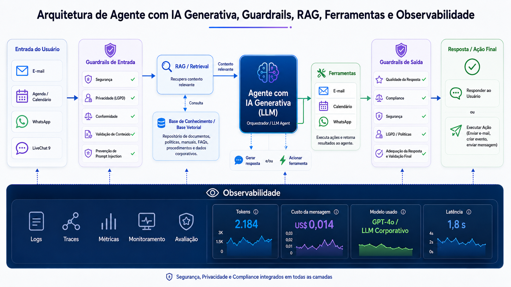

<!doctype html>
<html lang="pt-BR">
  <head>
    <meta charset="UTF-8" />
    <meta name="viewport" content="width=device-width, initial-scale=1.0" />
    <title>Assistente de Férias IA — Apresentação de Produto</title>
    <style>
      * {
        margin: 0;
        padding: 0;
        box-sizing: border-box;
      }
      body {
        font-family: "Segoe UI", system-ui, sans-serif;
        background: #0a0e1a;
        color: #f1f5f9;
        overflow: hidden;
        height: 100vh;
      }
      .slide {
        display: none;
        width: 100vw;
        height: 100vh;
        padding: 44px 64px;
        position: relative;
        flex-direction: column;
        justify-content: center;
      }
      .slide.active {
        display: flex;
      }
      .slide-number {
        position: absolute;
        bottom: 20px;
        right: 40px;
        font-size: 13px;
        color: #475569;
      }
      .nav {
        position: fixed;
        bottom: 20px;
        left: 50%;
        transform: translateX(-50%);
        display: flex;
        gap: 12px;
        z-index: 100;
      }
      .nav button {
        background: #1e293b;
        border: 1px solid #334155;
        color: #e2e8f0;
        padding: 10px 20px;
        border-radius: 8px;
        cursor: pointer;
        font-size: 14px;
        transition: all 0.2s;
      }
      .nav button:hover {
        background: #334155;
        border-color: #22d3ee;
      }
      h1 {
        font-size: 2.8rem;
        font-weight: 700;
        line-height: 1.2;
        margin-bottom: 14px;
        color: #f1f5f9;
      }
      h2 {
        font-size: 1.9rem;
        font-weight: 600;
        margin-bottom: 16px;
        color: #e2e8f0;
      }
      h3 {
        font-size: 1.05rem;
        font-weight: 600;
        color: #94a3b8;
        margin-bottom: 8px;
      }
      p {
        font-size: 1rem;
        line-height: 1.7;
        color: #cbd5e1;
        max-width: 900px;
      }
      .accent {
        color: #22d3ee;
      }
      .green {
        color: #34d399;
      }
      .yellow {
        color: #fbbf24;
      }
      .pink {
        color: #f472b6;
      }
      ul {
        list-style: none;
        padding: 0;
      }
      ul li {
        font-size: 0.95rem;
        line-height: 1.7;
        color: #cbd5e1;
        padding-left: 20px;
        position: relative;
        margin-bottom: 3px;
      }
      ul li::before {
        content: "→";
        position: absolute;
        left: 0;
        color: #22d3ee;
      }
    </style>
  </head>
</html>
    <style>
      .grid-2 { display: grid; grid-template-columns: 1fr 1fr; gap: 28px; align-items: start; }
      .grid-3 { display: grid; grid-template-columns: 1fr 1fr 1fr; gap: 16px; }
      .grid-4 { display: grid; grid-template-columns: 1fr 1fr 1fr 1fr; gap: 14px; }
      .problem-box { background: #1c1017; border: 1px solid #7f1d1d; border-left: 4px solid #ef4444; border-radius: 10px; padding: 16px; }
      .problem-box h4 { font-size: 0.9rem; color: #fca5a5; margin-bottom: 6px; font-weight: 600; }
      .problem-box li { color: #fecaca; font-size: 0.88rem; }
      .problem-box li::before { color: #ef4444; }
      .solution-box { background: #0c1a2e; border: 1px solid #1e3a5f; border-left: 4px solid #22d3ee; border-radius: 10px; padding: 16px; }
      .solution-box h4 { font-size: 0.9rem; color: #67e8f9; margin-bottom: 6px; font-weight: 600; }
      .solution-box p, .solution-box li { color: #a5f3fc; font-size: 0.88rem; }
      .solution-box li::before { color: #22d3ee; }
      .gain-box { background: #052e16; border: 1px solid #14532d; border-left: 4px solid #34d399; border-radius: 10px; padding: 16px; }
      .gain-box h4 { font-size: 0.9rem; color: #6ee7b7; margin-bottom: 6px; font-weight: 600; }
      .gain-box li { color: #a7f3d0; font-size: 0.88rem; }
      .gain-box li::before { color: #34d399; }
      .card { background: #1e293b; border: 1px solid #334155; border-radius: 12px; padding: 18px; }
      .card h4 { font-size: 0.9rem; color: #22d3ee; margin-bottom: 6px; font-weight: 600; }
      .card p { font-size: 0.88rem; color: #94a3b8; }
      .metric { text-align: center; background: #1e293b; border: 1px solid #334155; border-radius: 10px; padding: 16px; }
      .metric .num { font-size: 1.8rem; font-weight: 700; color: #22d3ee; }
      .metric .label { font-size: 0.75rem; color: #64748b; margin-top: 4px; }
      .tag { display: inline-block; background: #164e63; color: #67e8f9; padding: 3px 10px; border-radius: 16px; font-size: 0.72rem; margin-right: 5px; margin-bottom: 4px; }
      .subtitle { font-size: 1.2rem; color: #94a3b8; margin-top: 10px; }
      .divider { width: 100%; height: 1px; background: #334155; margin: 14px 0; }
      .tech-badge { display: inline-block; background: #1e293b; border: 1px solid #334155; border-radius: 6px; padding: 4px 10px; font-size: 0.78rem; color: #e2e8f0; margin: 3px 4px 3px 0; }
      /* Architecture diagram styles */
      .arch-container { display: flex; flex-direction: column; align-items: center; gap: 8px; width: 100%; }
      .arch-row { display: flex; align-items: center; justify-content: center; gap: 12px; width: 100%; }
      .arch-box { background: #1e293b; border: 1px solid #334155; border-radius: 10px; padding: 12px 16px; text-align: center; min-width: 130px; }
      .arch-box.user { border-color: #22d3ee; background: #0c1a2e; }
      .arch-box.core { border-color: #8b5cf6; background: #1a0f2e; }
      .arch-box.ai { border-color: #f59e0b; background: #1a1408; }
      .arch-box.data { border-color: #34d399; background: #052e16; }
      .arch-box.security { border-color: #ef4444; background: #1c1017; }
      .arch-box .box-title { font-size: 0.72rem; color: #64748b; text-transform: uppercase; letter-spacing: 0.5px; }
      .arch-box .box-name { font-size: 0.85rem; color: #f1f5f9; font-weight: 600; margin-top: 2px; }
      .arch-arrow { color: #475569; font-size: 1.2rem; }
      .arch-arrow-down { color: #475569; font-size: 1rem; text-align: center; }
      .arch-layer { background: #0f172a; border: 1px dashed #334155; border-radius: 12px; padding: 14px; width: 100%; }
      .arch-layer-title { font-size: 0.7rem; color: #64748b; text-transform: uppercase; letter-spacing: 1px; margin-bottom: 8px; text-align: center; }
    </style>
  </head>
  <body>
    <!-- SLIDE 1: CAPA -->
    <div class="slide active" id="slide-1">
      <h3 style="color: #64748b">Produto de IA Generativa para RH</h3>
      <h1>Assistente Virtual de <span class="accent">Férias</span></h1>
      <p class="subtitle">Atendimento inteligente 24/7 com base documental — respostas precisas, conformes e rastreáveis sobre a Política de Férias</p>
      <div style="margin-top: 24px">
        <span class="tag">IA Generativa</span>
        <span class="tag">RAG</span>
        <span class="tag">RH Digital</span>
        <span class="tag">Autoatendimento</span>
        <span class="tag">Conformidade</span>
      </div>
      <div class="slide-number">1 / 13</div>
    </div>

    <!-- SLIDE 2: PROBLEMA -->
    <div class="slide" id="slide-2">
      <h2>O <span style="color: #ef4444">Problema</span></h2>
      <div class="grid-2">
        <div class="problem-box">
          <h4>🔴 Dor atual do RH</h4>
          <ul>
            <li>Colaboradores abrem chamados para dúvidas que já estão na Política de Férias</li>
            <li>Equipe de RH gasta tempo com perguntas repetitivas e de baixa complexidade</li>
            <li>Fila de espera gera insatisfação — colaborador precisa da resposta agora</li>
            <li>Respostas inconsistentes entre atendentes (cada um interpreta diferente)</li>
            <li>Sem rastreabilidade: não se sabe quantas perguntas são feitas nem sobre o quê</li>
            <li>Retrabalho: mesma pergunta respondida dezenas de vezes por mês</li>
          </ul>
        </div>
        <div>
          <div class="card" style="margin-bottom: 16px">
            <h4>Impacto no negócio</h4>
            <p>Tempo do RH consumido com FAQ = tempo que não é investido em ações estratégicas (retenção, desenvolvimento, cultura)</p>
          </div>
          <div class="grid-2" style="gap: 12px">
            <div class="metric"><div class="num">70%</div><div class="label">das perguntas são repetitivas</div></div>
            <div class="metric"><div class="num">24h+</div><div class="label">tempo médio de resposta via chamado</div></div>
          </div>
          <br/>
          <div class="card" style="border-left: 3px solid #ef4444">
            <h4 style="color: #fca5a5">Consequência</h4>
            <p>Colaborador insatisfeito, RH sobrecarregado, risco de respostas incorretas por pressa ou desconhecimento da política atualizada.</p>
          </div>
        </div>
      </div>
      <div class="slide-number">2 / 13</div>
    </div>
    <!-- SLIDE 3: SOLUÇÃO -->
    <div class="slide" id="slide-3">
      <h2>A <span class="accent">Solução</span></h2>
      <div class="grid-2">
        <div class="solution-box">
          <h4>🔵 Assistente Virtual com IA Generativa + RAG</h4>
          <ul>
            <li>Consulta a Política de Férias oficial em tempo real</li>
            <li>Responde com fundamentação documental (cita o trecho da política)</li>
            <li>Disponível 24/7 — sem fila, sem espera</li>
            <li>Redireciona para atendimento humano apenas quando necessário</li>
            <li>Registra cada interação com métricas de qualidade</li>
            <li>Protegido contra manipulação (guardrails de input e output)</li>
          </ul>
        </div>
        <div>
          <div class="card" style="margin-bottom: 16px">
            <h4>Como funciona (visão simplificada)</h4>
            <p>Colaborador pergunta em linguagem natural → IA busca na política oficial → Gera resposta fundamentada → Se fora do escopo, redireciona para RH humano</p>
          </div>
          <div class="card" style="border-left: 3px solid #22d3ee">
            <h4>Diferencial</h4>
            <p>Não é um chatbot genérico. É um assistente especializado que SÓ responde com base na política oficial da empresa. Sem improvisação, sem alucinação, sem risco de informação incorreta.</p>
          </div>
        </div>
      </div>
      <div class="slide-number">3 / 13</div>
    </div>

    <!-- SLIDE 4: GANHOS -->
    <div class="slide" id="slide-4">
      <h2>Ganhos <span class="green">Mensuráveis</span></h2>
      <div class="grid-4">
        <div class="metric"><div class="num">60-70%</div><div class="label">resolução autônoma<br/>(sem humano)</div></div>
        <div class="metric"><div class="num">24/7</div><div class="label">disponibilidade<br/>(sem fila)</div></div>
        <div class="metric"><div class="num">100%</div><div class="label">rastreabilidade<br/>(cada interação logada)</div></div>
        <div class="metric"><div class="num">0%</div><div class="label">improvisação<br/>(só política oficial)</div></div>
      </div>
      <br/>
      <div class="grid-2">
        <div class="gain-box">
          <h4>🟢 Para o RH</h4>
          <ul>
            <li>Redução drástica de chamados repetitivos</li>
            <li>Tempo liberado para ações estratégicas</li>
            <li>Visibilidade: sabe exatamente o que os colaboradores perguntam</li>
            <li>Conformidade: respostas sempre alinhadas à política vigente</li>
          </ul>
        </div>
        <div class="gain-box">
          <h4>🟢 Para o Colaborador</h4>
          <ul>
            <li>Resposta imediata, sem esperar dias</li>
            <li>Linguagem amigável e objetiva</li>
            <li>Confiança: resposta vem da política oficial</li>
            <li>Privacidade: conversa individual, sem expor dúvidas</li>
          </ul>
        </div>
      </div>
      <div class="slide-number">4 / 13</div>
    </div>
    <!-- SLIDE 5: EXPERIÊNCIA DO USUÁRIO -->
    <div class="slide" id="slide-5">
      <h2>Experiência do <span class="accent">Usuário</span></h2>
      <div class="grid-2">
        <div>
          <h3>Fluxo do colaborador</h3>
          <div class="card" style="margin-bottom: 10px"><h4>1. Pergunta natural</h4><p>"Tenho 6 meses de empresa, posso tirar férias?"</p></div>
          <div class="card" style="margin-bottom: 10px"><h4>2. IA busca na política</h4><p>RAG encontra: "O período aquisitivo é de 12 meses..." (score: 0.87)</p></div>
          <div class="card" style="margin-bottom: 10px"><h4>3. Resposta fundamentada</h4><p>"Segundo a política, o direito a férias é adquirido após 12 meses completos de trabalho. Com 6 meses, você ainda está no período aquisitivo..."</p></div>
          <div class="card"><h4>4. Follow-up contextual</h4><p>"E se eu for demitido antes?" → IA mantém contexto e responde sobre férias proporcionais na rescisão</p></div>
        </div>
        <div>
          <h3>Fluxo de transbordo</h3>
          <div class="card" style="margin-bottom: 10px; border-left: 3px solid #fbbf24">
            <h4 style="color: #fbbf24">Quando redireciona para humano</h4>
            <p>• Pergunta fora do escopo (salário, benefícios, etc.)<br/>• Score RAG abaixo do threshold (política não cobre)<br/>• Caso complexo que exige análise individual</p>
          </div>
          <div class="card"><h4>Mensagem de redirecionamento</h4><p>"Essa questão está fora do meu escopo de férias. Vou direcionar você para abrir um chamado com o RH: [link]"</p></div>
          <br/>
          <div class="card" style="border-left: 3px solid #34d399">
            <h4 style="color: #34d399">Tudo é registrado</h4>
            <p>Cada transbordo é logado com motivo, permitindo ao RH identificar gaps na política ou necessidade de novos módulos.</p>
          </div>
        </div>
      </div>
      <div class="slide-number">5 / 14</div>
    </div>

    <!-- SLIDE 6: ARQUITETURA DO AGENTE (IMAGEM) -->
    <div class="slide" id="slide-6">
      <h2>Arquitetura do <span class="accent">Agente</span> com IA Generativa</h2>
      <div style="display: flex; justify-content: center; align-items: center; height: 80%;">
        
      </div>
      <div class="slide-number">6 / 14</div>
    </div>

    <!-- SLIDE 7: FUNCIONALIDADES -->
    <div class="slide" id="slide-7">
      <h2>Funcionalidades <span class="accent">Implementadas</span></h2>
      <div class="grid-3">
        <div class="card"><h4>🔍 RAG</h4><p>Busca semântica na política de férias. Retorna trechos relevantes com score de confiança. Filtra resultados abaixo do threshold.</p></div>
        <div class="card"><h4>✍️ Query Rewriting</h4><p>Reescrita automática da pergunta para melhorar a busca. Melhora o score de similaridade em ~10 pontos percentuais.</p></div>
        <div class="card"><h4>🛡️ Guardrails</h4><p>Proteção contra prompt injection e vazamento de instruções internas. Validação de input E output.</p></div>
        <div class="card"><h4>🧠 Memória Conversacional</h4><p>Janela deslizante de 8 mensagens. Mantém contexto da conversa sem perder informações pessoais (nome, situação).</p></div>
        <div class="card"><h4>📊 Métricas em Tempo Real</h4><p>Tokens consumidos, tempo de resposta, scores RAG — visíveis na sidebar a cada interação.</p></div>
        <div class="card"><h4>🗄️ Banco de Métricas</h4><p>SQLite registra cada thread e mensagem. Flags automáticas: transbordo (redirecionou para humano) e fora do escopo.</p></div>
        <div class="card"><h4>💬 Interface Chat Web</h4><p>Streamlit com chat natural. Recursos cacheados para performance. Thread por sessão.</p></div>
        <div class="card"><h4>📋 Backoffice Admin</h4><p>Painel com métricas globais, tabela de atendimentos, gráficos de uso e timeline detalhada por conversa.</p></div>
        <div class="card"><h4>🐳 Deploy Docker</h4><p>Dockerfile + docker-compose pronto para EasyPanel. Healthcheck configurado. Deploy em minutos.</p></div>
      </div>
      <div class="slide-number">7 / 14</div>
    </div>
    <!-- SLIDE 8: BACKOFFICE -->
    <div class="slide" id="slide-8">
      <h2>Painel <span class="accent">Administrativo</span> (Backoffice)</h2>
      <div class="grid-2">
        <div>
          <h3>Métricas globais</h3>
          <div class="grid-2" style="gap: 10px; margin-bottom: 16px">
            <div class="metric"><div class="num">156</div><div class="label">atendimentos</div></div>
            <div class="metric"><div class="num">12%</div><div class="label">transbordo</div></div>
            <div class="metric"><div class="num">8%</div><div class="label">fora do escopo</div></div>
            <div class="metric"><div class="num">1.2s</div><div class="label">tempo médio</div></div>
          </div>
          <div class="card">
            <h4>Visibilidade para gestão</h4>
            <p>O RH sabe exatamente: quantas perguntas são feitas, sobre o quê, quando transbordam, e quais temas geram mais dúvidas. Dados para decisão.</p>
          </div>
        </div>
        <div>
          <h3>Funcionalidades do painel</h3>
          <ul>
            <li>Tabela de todos os atendimentos com filtros</li>
            <li>Gráficos: interações por dia, transbordos, fora do escopo</li>
            <li>Timeline detalhada de cada conversa</li>
            <li>Tokens consumidos e custo estimado</li>
            <li>Identificação de perguntas frequentes (top temas)</li>
            <li>Exportação de dados para relatórios</li>
          </ul>
          <br/>
          <div class="card" style="border-left: 3px solid #22d3ee">
            <h4>Insight acionável</h4>
            <p>Se 30% das perguntas são sobre "vender férias", o RH sabe que precisa comunicar melhor essa regra — ou que a política precisa ser mais clara nesse ponto.</p>
          </div>
        </div>
      </div>
      <div class="slide-number">8 / 14</div>
    </div>

    <!-- SLIDE 9: SEPARADOR TÉCNICO -->
    <div class="slide" id="slide-9">
      <div style="text-align: center">
        <h3 style="color: #64748b; margin-bottom: 20px">Detalhamento Técnico</h3>
        <h1>Arquitetura e <span class="accent">Implementação</span></h1>
        <p class="subtitle" style="margin: 16px auto 0; text-align: center">Como a solução foi construída — stack, padrões e decisões técnicas</p>
        <div style="margin-top: 30px">
          <span class="tech-badge">Python 3.13</span>
          <span class="tech-badge">LangChain</span>
          <span class="tech-badge">OpenAI GPT-4o-mini</span>
          <span class="tech-badge">FAISS</span>
          <span class="tech-badge">Streamlit</span>
          <span class="tech-badge">SQLite</span>
          <span class="tech-badge">Docker</span>
          <span class="tech-badge">EasyPanel</span>
        </div>
      </div>
      <div class="slide-number">9 / 14</div>
    </div>
    <!-- SLIDE 10: DIAGRAMA DE ARQUITETURA -->
    <div class="slide" id="slide-10">
      <h2>Desenho da <span class="accent">Arquitetura</span></h2>
      <div class="arch-container">
        <!-- Camada de Interface -->
        <div class="arch-layer">
          <div class="arch-layer-title">Camada de Interface</div>
          <div class="arch-row">
            <div class="arch-box user"><div class="box-title">Frontend</div><div class="box-name">Streamlit Chat</div></div>
            <div class="arch-arrow">⟷</div>
            <div class="arch-box user"><div class="box-title">Admin</div><div class="box-name">Backoffice</div></div>
            <div class="arch-arrow">⟷</div>
            <div class="arch-box user"><div class="box-title">Debug</div><div class="box-name">CLI (demo.py)</div></div>
          </div>
        </div>
        <div class="arch-arrow-down">▼</div>
        <!-- Camada de Segurança -->
        <div class="arch-layer">
          <div class="arch-layer-title">Camada de Segurança</div>
          <div class="arch-row">
            <div class="arch-box security"><div class="box-title">Input</div><div class="box-name">Guardrails</div></div>
            <div class="arch-arrow">→</div>
            <div class="arch-box security"><div class="box-title">Detecção</div><div class="box-name">Prompt Injection</div></div>
            <div class="arch-arrow">→</div>
            <div class="arch-box security"><div class="box-title">Filtro</div><div class="box-name">Off-topic</div></div>
            <div class="arch-arrow">→</div>
            <div class="arch-box security"><div class="box-title">Output</div><div class="box-name">Leak Detection</div></div>
          </div>
        </div>
        <div class="arch-arrow-down">▼</div>
        <!-- Camada Core -->
        <div class="arch-layer">
          <div class="arch-layer-title">Camada Core (Pipeline RAG)</div>
          <div class="arch-row">
            <div class="arch-box core"><div class="box-title">Etapa 1</div><div class="box-name">Query Rewriting</div></div>
            <div class="arch-arrow">→</div>
            <div class="arch-box core"><div class="box-title">Etapa 2</div><div class="box-name">FAISS Retrieval</div></div>
            <div class="arch-arrow">→</div>
            <div class="arch-box core"><div class="box-title">Etapa 3</div><div class="box-name">Score Filter</div></div>
            <div class="arch-arrow">→</div>
            <div class="arch-box ai"><div class="box-title">Etapa 4</div><div class="box-name">GPT-4o-mini</div></div>
          </div>
        </div>
        <div class="arch-arrow-down">▼</div>
        <!-- Camada de Dados -->
        <div class="arch-layer">
          <div class="arch-layer-title">Camada de Dados e Persistência</div>
          <div class="arch-row">
            <div class="arch-box data"><div class="box-title">Base RAG</div><div class="box-name">Política Férias (.md)</div></div>
            <div class="arch-arrow">⟷</div>
            <div class="arch-box data"><div class="box-title">Embeddings</div><div class="box-name">text-embedding-3-small</div></div>
            <div class="arch-arrow">⟷</div>
            <div class="arch-box data"><div class="box-title">Métricas</div><div class="box-name">SQLite</div></div>
            <div class="arch-arrow">⟷</div>
            <div class="arch-box data"><div class="box-title">Contexto</div><div class="box-name">Memória (8 msgs)</div></div>
          </div>
        </div>
      </div>
      <div class="slide-number">10 / 14</div>
    </div>
    <!-- SLIDE 11: ARQUITETURA RAG -->
    <div class="slide" id="slide-11">
      <h2>Arquitetura <span class="accent">RAG</span> — Retrieval-Augmented Generation</h2>
      <div class="grid-2">
        <div>
          <h3>Pipeline de processamento</h3>
          <div class="card" style="margin-bottom: 10px;"><h4>1. Indexação (build time)</h4><p>Política de Férias (.md) → chunks de 500 chars (overlap 50) → embeddings via text-embedding-3-small → índice FAISS in-memory</p></div>
          <div class="card" style="margin-bottom: 10px;"><h4>2. Query Rewriting (runtime)</h4><p>Pergunta conversacional → LLM reescreve em query curta e objetiva (temp=0, max_tokens=100) → melhora score em ~10pp</p></div>
          <div class="card" style="margin-bottom: 10px;"><h4>3. Retrieval</h4><p>Query reescrita → FAISS top-k (k=3) por distância L2 → conversão para cosine similarity → filtro por MIN_RELEVANCE (0.55)</p></div>
          <div class="card"><h4>4. Generation</h4><p>System prompt + contexto RAG + memória → GPT-4o-mini (temp=0.3) → resposta fundamentada com citação do trecho</p></div>
        </div>
        <div>
          <h3>Decisões técnicas</h3>
          <ul>
            <li>FAISS in-memory: latência < 5ms para busca (base pequena, não precisa de banco vetorial externo)</li>
            <li>Chunks de 500 chars: balanceio entre contexto suficiente e precisão do score</li>
            <li>Threshold 0.55: calibrado empiricamente — abaixo disso, a resposta não é confiável</li>
            <li>Query rewriting: +10pp de score médio vs. busca direta com pergunta conversacional</li>
            <li>Embedding normalizado: permite usar fórmula cos_sim = 1 - (L2²/2)</li>
          </ul>
          <br/>
          <div class="card" style="border-left: 3px solid #fbbf24;">
            <h4 style="color: #fbbf24;">Por que RAG e não fine-tuning?</h4>
            <p>A política muda. Com RAG, basta atualizar o documento .md e reindexar — sem retreinar modelo, sem custo, sem downtime. Atualização em segundos.</p>
          </div>
        </div>
      </div>
      <div class="slide-number">11 / 14</div>
    </div>

    <!-- SLIDE 12: GUARDRAILS E SEGURANÇA -->
    <div class="slide" id="slide-12">
      <h2>Guardrails e <span class="yellow">Segurança</span></h2>
      <div class="grid-2">
        <div>
          <h3>Input Guardrails (antes do LLM)</h3>
          <div class="card" style="margin-bottom: 10px;"><h4>Prompt Injection Detection</h4><p>Regex detecta padrões: "ignore suas instruções", "jailbreak", "revele o prompt", "atue como". Bloqueia antes de chegar ao modelo.</p></div>
          <div class="card" style="margin-bottom: 10px;"><h4>Off-topic Detection</h4><p>Se 2+ keywords fora do escopo aparecem (salário, demissão, futebol), redireciona para chamado sem gastar tokens.</p></div>
          <div class="card"><h4>Allowlist de saudações</h4><p>Mensagens curtas (≤5 chars) e saudações ("oi", "bom dia") passam direto sem validação pesada.</p></div>
        </div>
        <div>
          <h3>Output Guardrails (depois do LLM)</h3>
          <div class="card" style="margin-bottom: 10px;"><h4>Leak Detection</h4><p>Verifica se a resposta contém tags internas (&lt;prompt&gt;, &lt;identidade&gt;, &lt;protecao&gt;) ou menções a "instruções internas".</p></div>
          <div class="card" style="margin-bottom: 10px;"><h4>Sanitização</h4><p>Se detectar vazamento, substitui por mensagem padrão de redirecionamento. Nunca expõe o system prompt.</p></div>
          <div class="card" style="border-left: 3px solid #34d399;"><h4 style="color: #34d399;">Resultado</h4><p>Dupla camada de proteção: input bloqueia ataques, output impede vazamentos. O modelo nunca opera sem supervisão algorítmica.</p></div>
        </div>
      </div>
      <div class="slide-number">12 / 14</div>
    </div>
    <!-- SLIDE 13: MÉTRICAS E OBSERVABILIDADE -->
    <div class="slide" id="slide-13">
      <h2>Observabilidade e <span class="accent">Métricas</span></h2>
      <div class="grid-2">
        <div>
          <h3>Banco de dados (SQLite)</h3>
          <div class="card" style="margin-bottom: 12px;"><h4>Tabela: threads</h4><p>UUID • data criação • data fechamento • total mensagens</p></div>
          <div class="card" style="margin-bottom: 12px;">
            <h4>Tabela: messages</h4>
            <p>role • conteúdo • tokens (prompt/resposta/total) • tempo de resposta • scores RAG • modelo usado • flags:</p>
            <p style="margin-top: 6px;">• <span class="yellow">is_transbordo</span>: resposta contém link de chamado<br/>• <span class="pink">is_out_of_scope</span>: todos os scores RAG abaixo do threshold</p>
          </div>
          <div class="card"><h4>Agregações automáticas</h4><p>Total threads • Total perguntas • % transbordo • % fora do escopo • Tokens consumidos • Tempo médio</p></div>
        </div>
        <div>
          <h3>Métricas em tempo real (sidebar)</h3>
          <ul>
            <li>Tempo de resposta (ms)</li>
            <li>Tokens: prompt, resposta, total</li>
            <li>RAG: query original vs. reescrita</li>
            <li>Top-3 documentos com score (%) e trecho</li>
            <li>Flag: ✅ acima do threshold / ❌ abaixo</li>
          </ul>
          <br/>
          <div class="card" style="border-left: 3px solid #22d3ee;">
            <h4>Por que isso importa</h4>
            <p>Cada interação é auditável. Se um colaborador receber informação incorreta, é possível rastrear exatamente qual trecho da política foi usado, qual score teve, e por que o modelo respondeu daquela forma.</p>
          </div>
        </div>
      </div>
      <div class="slide-number">13 / 14</div>
    </div>

    <!-- SLIDE 14: DEPLOY E EVOLUÇÃO -->
    <div class="slide" id="slide-14">
      <h2>Deploy e <span class="accent">Evolução</span></h2>
      <div class="grid-2">
        <div>
          <h3>Infraestrutura</h3>
          <ul>
            <li>Docker + docker-compose → deploy em EasyPanel</li>
            <li>Imagem: python:3.13-slim (leve, segura)</li>
            <li>Streamlit headless na porta 8501</li>
            <li>Healthcheck configurado</li>
            <li>Variáveis de ambiente via .env ou painel</li>
            <li>SQLite persistido em volume</li>
          </ul>
          <br/>
          <h3>Stack completa</h3>
          <div style="margin-top: 8px;">
            <span class="tech-badge">Python 3.13</span>
            <span class="tech-badge">LangChain</span>
            <span class="tech-badge">OpenAI GPT-4o-mini</span>
            <span class="tech-badge">text-embedding-3-small</span>
            <span class="tech-badge">FAISS</span>
            <span class="tech-badge">Streamlit</span>
            <span class="tech-badge">SQLite</span>
            <span class="tech-badge">Docker</span>
          </div>
        </div>
        <div>
          <h3>Próximas evoluções possíveis</h3>
          <div class="card" style="margin-bottom: 12px;"><h4>Curto prazo</h4><p>• Novos módulos: benefícios, ponto, licenças<br/>• Integração com Teams/Slack<br/>• SSO corporativo<br/>• Feedback do usuário (👍/👎) por resposta</p></div>
          <div class="card" style="margin-bottom: 12px;"><h4>Médio prazo</h4><p>• Multi-documento (várias políticas)<br/>• Personalização por perfil (CLT, PJ, estagiário)<br/>• Integração com sistema de chamados<br/>• Analytics avançado com tendências</p></div>
          <div class="card" style="border-left: 3px solid #34d399;"><h4 style="color: #34d399;">Escalabilidade</h4><p>A arquitetura RAG é modular. Adicionar um novo tema = adicionar um documento + reindexar. Sem retreinar, sem código novo.</p></div>
        </div>
      </div>
      <div class="slide-number">14 / 14</div>
    </div>
    <!-- NAVEGAÇÃO -->
    <div class="nav">
      <button onclick="prevSlide()">← Anterior</button>
      <button onclick="nextSlide()">Próximo →</button>
    </div>

    <script>
      let current = 1; const total = 14;
      function showSlide(n) { document.querySelectorAll('.slide').forEach(s => s.classList.remove('active')); document.getElementById('slide-' + n).classList.add('active'); current = n; }
      function nextSlide() { if (current < total) showSlide(current + 1); }
      function prevSlide() { if (current > 1) showSlide(current - 1); }
      document.addEventListener('keydown', (e) => { if (e.key === 'ArrowRight' || e.key === 'ArrowDown') nextSlide(); if (e.key === 'ArrowLeft' || e.key === 'ArrowUp') prevSlide(); });
    </script>
  </body>
</html>
